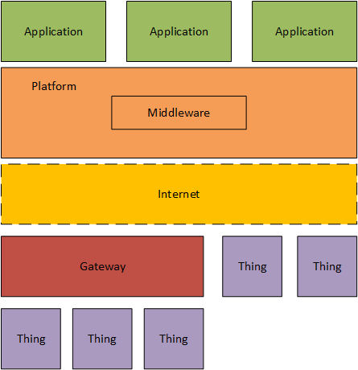

Introduction to
Internet of Things Platforms
@1995parham
Parham Alvani
parham.alvani@gmail.com
Who I am?
school BSc. Software Engineering @ Amirkabir University of Technology
school MSc. Computer Networks @ Amirkabir University of Technology
domain Have been in IoT/Platforms since June 2015 (Ordibehesht 1394)
What I have done?
Where do I work?
Bambil
Where do I work?
Nahal
Lian Smart Cloud based Monitoring
Let's Light the Lamp
IoT ?!
The network of physical objects or things embedded with electronics, software, sensors, and connectivity to enable objects to exchange data with the manufacturer, operator and/or other connected devices based on the infrastructure of ITU's Global Standards Initiative
IoT ?!
A global infrastructure for the information society, enabling advanced services by interconnecting (physical and virtual) things based on existing and evolving interoperable information and communication technologies
IoT ?!
A scenario in which objects, animals or people are provided with unique identifiers and the ability to transfer data over a network without requiring human-to-human or human-to-computer interaction.
What is IoT?
- A thing in IoT can be any natural or man-made object can be assigned IP(v6) address.
- So far, the Internet of Things has been most closely associated with machine-to-machine (M2M) communication.
- Although the concept wasn’t named until 1999, the Internet of Things has been in development for decades.
IoT’s Applications
- Environmental monitoring
- Infrastructure management
- Smart metering
- Manufacturing
- Energy management
- Medical and healthcare systems
- Building and home automation
- Transportation
- ...
Research Topics in IoT
- Fog Computing
- Machine Learning
- Wireless Sensor Networks
Why are we using smart things alone?
The IoT technologies in sync up with cloud infrastructures are to result in people-centric smarter environments.
What is an IoT platform ?
In simple words the purpose of any IoT device is to connect with other IoT devices and applications (cloud-based mostly) to relay information using internet transfer protocols.
The gap between the device sensors and data networks is filled by an IoT Platform.
What is thier job ?
- Application point of view
- Things point of view
Application point of view
Things point of view
Platforms in bigger scope
- Data Regulation and Governance
- IoT Operators
- Rules and regulations applies on IoT Operator instead of Customers
IoT Platforms vs IoT Middlewares
- Middleware connects different, often complex and already existing programs that were not originally designed to be connected.
- Middleware is part of the architecture enabling connectivity for huge numbers of diverse Things by providing a connectivity layer for sensors and also for the application layers that provide services that ensure effective communications among software.
Middleware is a connectivity layer

Middleware is a connectivity layer (Complex View)
IoT Platforms contains IoT Middlewars
IoT Platforms Features
- Support of heterogeneous devices
- Generated SDK
- Library
- Open Source
- REST API
- Data Access Control
- Type:
- PaaS (Platform-as-a-Service)
- SaaS (Software-as-a-Service)
- Local Installation
IoT Platforms Features
- Services:
- Monitoring
- Event Delivering
- (Service) Discovery
- Big Data Streaming
Real platform architecture

Platforms Components
- Conectivity and Normalization
- Agents and libraries that ensure constant object connectivity and harmonized data formats
- Device Management
- Backend tool for the management of device status, remote software deployment and updates
Platforms Components
- Processing and action mamagement
- Rule engine that allows for (real-time) actions based on incoming sensor and device data
- Data visualization
- Graphical depiction of (real-time) sensor data
Platforms Components
- Analytics
- Algorithms for advanced calculations and machine learning
- Additional tools
- Further development tools (e.g., app prototyping, access management, reporting)
Platforms Components
- External interfaces
- APIs, SDKs and gateways that acts as interfaces for 3rd party systems
- Database
- Repository that stores the important data sets
Which protocol we must use for connectivity?
- WSN Protocols
- TCP/IP Based protocols
Protocols in TCP/IP based Platforms

Can you build an IoT system with familiar Web technologies?
- Yes you can, although the result would not be as efficient as with the newer protocols.
- But efficiency depends on our agents and things
- At the end, what we want to connect ?
Review on some protocols
TCP/IP Based for agent/platform communication
- CoAP
- UDP - Rqst/Rspnse
- MQTT
- UDP - Pub/Subsrb
- HTTP
- TCP - Rqst/Rspnse
- SNMP
- UDP - Rqst/Rspnse

Kaa

Kaa [Wikipedia]
Kaa is a fictional character that Rudyard Kipling describes him as an exceptionally long, yellowish Indian rock python.
Kaa [Kaa]
100% open-source Internet of Things middleware platform for everyone.
What is Kaa?
- Reliable foundation for developing your connected products.
- Transport-agnostic link between the hardware and application worlds.
- Much more than just a message bus.
- Customizable middleware that implements necessary functional patterns for the IoT.
- Cloud enablement software for your hardware products.
Kaa Architecture

What does kaa do for us?
- Messaging across endpoints
- Notification
- Collecting data from endpoints
Messaging across endpoints
Messaging across endpoints
- Kaa allows for delivery of events, which are structured messages, across endpoints
- The event class family can be used by one or multiple applications, thus the event can be shared between applications
Notification

Notification
- Kaa uses notifications to distribute structured messages, posted within notification topics, from the server to endpoints
Collecting data from endpoints

Collecting data from endpoints
- Kaa provides rich capabilities for collecting and storing structured data from endpoints
Distribution Method
- Open Source
- PaaS
Let's learn it in code

2 Main Pieces
- Kaa SDK (Agent)
- Kaa Server
Thingsboard

What is ThingsBoard?
Open-source IoT Platform - Device management, data collection, processing and visualization.
What does thingsboard do for us?
- Provision and manage devices and assets
- Provision, monitor and control your IoT entities in secure way using rich server-side APIs.
- Define relations between your devices, assets, customers or any other entities.
What does thingsboard do for us?
- Collect and visualize data
-
- Collect and store telemetry data in scalable and fault-tolerant way.
- Visualize your data with built-in or custom widgets and flexible dashboards.
- Share dashboards with your customers.
What does thingsboard do for us?
- Process and React
- Define data processing rules and trigger reactions using plugins.
- Raise alarms on incoming telemetry events or attribute updates.
- Enable use-case specific features using customizable rules and plugins.
What does thingsboard do for us?
- IoT Gateway
- Integrate devices connected to legacy and third-party systems using existing protocols.
Supported Protocols
- MQTT
- CoAP
- HTTP
Home-Assistant

What is Home-Assistant?
Open-source home automation platform running on Python 3
What does Home-Assistant do for us?
- Home Assistant will track the state of all the devices in your home, so you don't have to
- Control all your devices from a single, mobile-friendly, interface
- Set up advanced rules to control devices and bring your home alive.
Automating Home Assistant
(trigger) When Paulus arrives home
(condition) and it is after sunset:
(action) Turn the lights in the living room on
Bamboo

What is Bamboo?
Bamboo is a product of Bambil and former developers of I1820, which provides:
- Discovery Service
- Data Collection Service
- Configuration Service
- Realtime Service
Bamboo uses MQTT as communication protocol for things and HTTP as API provider for human users. It stores all collected data in a Time-Series database named InfluxDB.
Bamboo Architecture
Bamboo tries to implement IoT platform in microservices archiecture for the first-time in Iran. Thanks to Bambil founder knowledge, Bamboo uses last technologies in infrastructure area.
What does Bamboo do for us?
- Collecting data from the endpoints
- Active: Fetchs data from the agents using requests
- Passive: Collects data from agent's periodic push
- Schema less but model based thing definition
- InfluxDB supported
- Provides streams for data analyzers
Bamboo Components
- Connectivity
- Log (Periodic Push)
- Trap
- Set
- Get
Microsoft Azure
IoT Hub

Connect, monitor, and manage billions of IoT assets
- Establish bi-directional communication with billions of IoT devices
- Work with familiar platforms and protocols
- Open-source device SDKs for multiple platforms
- HTTP, Advanced Message Queuing Protocol (AMQP), and MQ Telemetry Transport (MQTT)
- Authenticate per device for security-enhanced IoT solutions
- Manage your IoT devices at scale with device management
- Extend the power of the cloud to your edge device